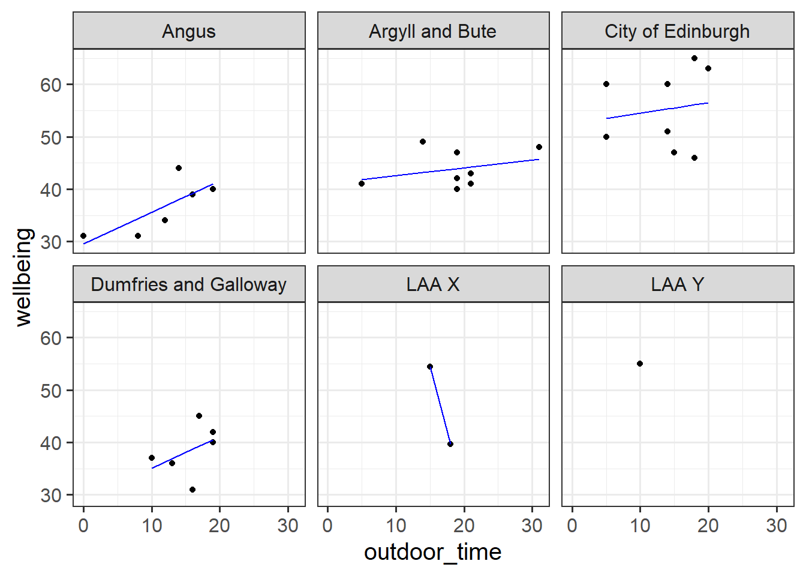
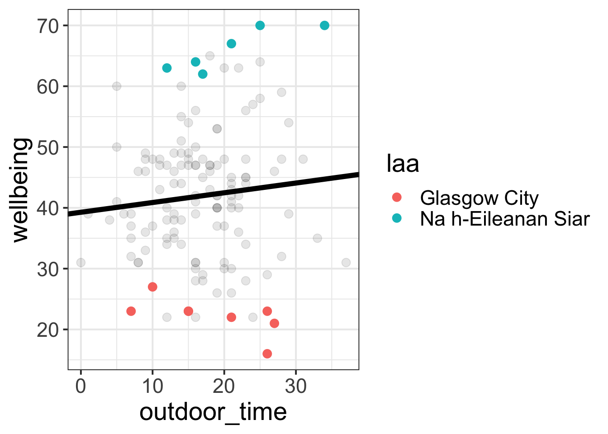
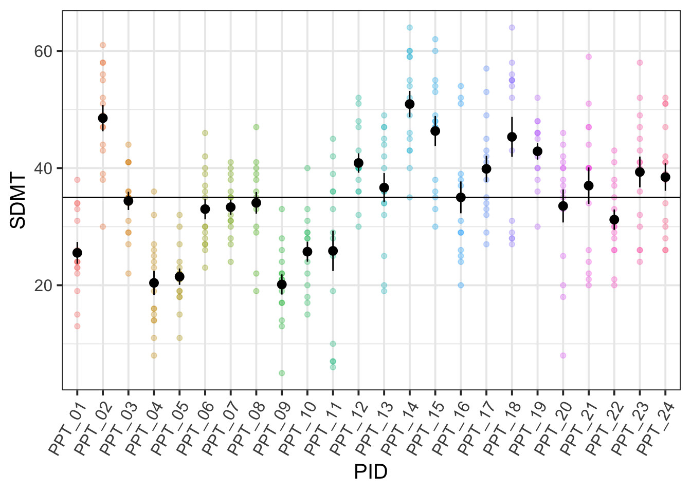

lm(y ~ x1 + x2 + .... xp, data = mydata) 1. Regression Refresh | Clustered Data
Preliminaries
- Open Rstudio!
- Create a new RMarkdown document or R script (whichever you like) for this week.
These are the main packages we’re going to use in this block. It might make sense to install them now if you do not have them already.
- tidyverse : for organising data
- patchwork: for organising plots
- ICC : for quickly calculating intraclass correlation coefficient
- lme4 : for fitting generalised linear mixed effects models
- parameters : inference!
- pbkrTest : more inference!
- HLMdiag : for examining case diagnostics at multiple levels
- lmeresampler : for bootstrapping!
- effects : for tables/plots
- sjPlot : for tables/plots
- broom.mixed : tidying methods for mixed models
You can install all of these at once using:
install.packages(c("tidyverse","ICC","lme4","parameters","pbkrTest",
"effects","broom.mixed","sjPlot","HLMdiag"))
# the lmeresampler package has had some recent updates.
# better to install the most recent version:
install.packages("devtools")
devtools::install_github("aloy/lmeresampler")Exercises: Linear Models & Pooling
Regression Refresh
Recall that in the DAPR2 course last year we learned all about the linear regression model, which took the form:
\[ \begin{align}\\ & \text{for observation }i \\ & \color{red}{Y_i}\color{black} = \color{blue}{\beta_0 \cdot{} 1 + \beta_1 \cdot{} X_{1i} \ + \ ... \ + \ \beta_p \cdot{} X_{pi}}\color{black} + \varepsilon_i \\ \end{align} \]
And if we wanted to write this more simply, we can express \(X_1\) to \(X_p\) as an \(n \times p\) matrix (samplesize \(\times\) parameters), and \(\beta_0\) to \(\beta_p\) as a vector of coefficients:
\[ \begin{align} & \color{red}{\mathbf{y}}\color{black} = \color{blue}{\boldsymbol{X\beta}}\color{black} + \boldsymbol{\varepsilon} \\ & \quad \\ & \text{where} \\ & \varepsilon \sim N(0, \sigma) \text{ independently} \\ \end{align} \] In R, we fitted these models using:
Data: Wellbeing Across Scotland
In DAPR2, one of the examples we used in learning about linear regression was in examining the relationship between time spent outdoors and mental wellbeing. In that example researchers had collected data from 32 residents of Edinburgh & Lothians.
Researchers want to study this relationship across all of Scotland. They contact all the Local Authority Areas (LAAs) and ask them to collect data for them, with participants completing the Warwick-Edinburgh Mental Wellbeing Scale (WEMWBS), a self-report measure of mental health and well-being, and being asked to estimate the average number of hours they spend outdoors each week.
Twenty of the Local Authority Areas provided data. It is available at https://uoepsy.github.io/data/LAAwellbeing.csv, and you can read it into your R environment using the code below:
scotmw <- read_csv("https://uoepsy.github.io/data/LAAwellbeing.csv")The dataset contains information on 132 participants. You can see the variables in the table below
| variable | description |
|---|---|
| ppt | Participant ID |
| name | Participant Name |
| laa | Local Authority Area |
| outdoor_time | Self report estimated number of hours per week spent outdoors |
| wellbeing | Warwick-Edinburgh Mental Wellbeing Scale (WEMWBS), a self-report measure of mental health and well-being. The scale is scored by summing responses to each item, with items answered on a 1 to 5 Likert scale. The minimum scale score is 14 and the maximum is 70. |
| density | LAA Population Density (people per square km) |
Question 1
Read in the Local Authority data from https://uoepsy.github.io/data/LAAwellbeing.csv and plot the bivariate relationship between wellbeing and time spent outdoors.
Then, using lm(), fit the simple linear model:
\[ \text{Wellbeing}_i = \beta_0 + \beta_1 \cdot \text{Hours per week spent outdoors}_i + \varepsilon_i \]
Think about the assumptions we make about the model:
\[ \text{where} \quad \varepsilon_i \sim N(0, \sigma) \text{ independently} \] Have we satisfied this assumption (specifically, the assumption of independence of errors)?

Question 2
Try running the code below.
ggplot(data = scotmw, aes(x = outdoor_time, y = wellbeing))+
geom_point()+
geom_smooth(method="lm",se=FALSE)Then try editing the code to include an aesthetic mapping from the LAA to the color in the plot.
How do your thoughts about the relationship between outdoor time and wellbeing change?
Information, pooled?
With our current toolset (linear regression), there are two avenues for us with respect to how we analyse clustered data. We can either ignore the clustering completely (and violate our assumptions), we can add the cluster-level differences in as another predictor. These reflect different ways in which we can “pool” information from across the different clusters.
Complete Pooling
All information from different clusters is pooled together estimate the relevant association (make one big line).
lm(wellbeing ~ outdoor_time, data = scotmw)Take all the people (individual observations), fit a regression line for wellbeing ~ outdoor_time.
No Pooling
Information from each cluster contributes only to an estimate for that specific cluster.
lm(wellbeing ~ outdoor_time * laa, data = scotmw)Take the people from each LAA and estimate wellbeing ~ outdoortime for each LAA. Treat the LAAs as completely independent, and estimate LAA-specific differences in wellbeing, and LAA-specific differences in the effect of outdoor_time on wellbeing. Get loads of coefficients that aren’t really of interest.
Estimating the LAA-specific differences in our model (the no-pooling approach) is clearly better than simply ignoring them, but it does mean that we are treating the LAAs as if they are completely independent entities.
Suppose we had another LAA - “LAA X” - for which we had only two people’s data (Figure 1). Intuitively, we don’t want to trust the line for LAA X as much as we trust the others (where we have c8 people’s data). In the no-pooling approach, it is only those two people from LAA X that contribute to the LAA X line. Take this further, and imagine we have only one person’s data from some LAA Y. In the no-pooling method, the model doesn’t learn anything from the other LAAs and cannot estimate a line for LAA Y.
What would be great is if we could somehow use the information from the other LAAs to inform our estimation of what is going on in LAAs X and Y. This is what multi-level modelling achieves, partially pooling information across the groups, and this is where we’ll turn to next.

Complete Pooling
We can consider the simple regression model (lm(wellbeing ~ outdoor_time, data = scotmw)) to “pool” the information from all observations together. In this ‘Complete Pooling’ approach, we simply ignore the natural clustering of the people into their local authority areas, as if we were unaware of it. The problem is that this assumes the same regression line for all local authority areas, which might not be that appropriate. Additionally, we violate the assumption that our residuals are independent, because all of the residuals from certain groups will be more like one another than they are to the others.

No Pooling
There are various ways we could attempt to deal with the problem that our data are in groups (or “clusters”). With the tools you have learned in DAPR2, you may be tempted to try including LAA in the model as another predictor, to account for all LAA-related variation in wellbeing:
lm(wellbeing ~ outdoor_time + laa, data = scotmw)This approach gets termed the “No Pooling” method, because the information from each cluster contributes only to an estimated parameter for that cluster, and there is no pooling of information across clusters. This is a good start, and is nice because it eliminates all of the LAA-level variation when estimating the coefficient for outdoor_time. But it has some considerable drawbacks in that it a) involves estimating a lot of parameters, and b) doesn’t allow for the effect of outdoor time on wellbeing to be different for each LAA. Extending this to include an interaction term outdoor_time * laa results in even more parameters, and the loss of the effect of interest (the effect of outdoor_time on wellbeing, within a given LAA). Furthermore, we have high variance in the estimates at each LAA because data from each LAA contributes to only that LAA’s slope.
Question 3
Fit the linear model below which accounts for the grouping of participants into their different local authorities, but holds the association between outdoor time and wellbeing as constant across LAAs:
mod1 <- lm(wellbeing ~ outdoor_time + laa, data = scotmw)Can you construct a plot of the fitted values from this model, coloured by LAA?
Hint
you might want to use the augment() function from the broom package

Question 4
What happens (to the plot, and to your parameter estimates) when you include the interaction between laa and outdoor_time?
Does it improve the model fit?

Exercises: Advanced Data Wrangling
With more complex data structures comes more in-depth data wrangling in order to get it ready for fitting and estimating our model. Typically, the data we get will not be neat and tidy, and will come in different formats. Often we simply get whatever our experiment/questionnaire software spits out, and we have to work from there. When you are designing a study, you can do work on the front end to minimise the data-wrangling. Try to design an experiment/questionnaire while keeping in mind what the data comes out looking like.
Below we have some data from a fake experiment. We’ve tried to make it a bit more difficult to work with - a bit more similar to what we would actually get when doing real-life research.
Data: Audio interference in executive functioning
This data is from a simulated study that aims to investigate the following research question:
How do different types of audio interfere with executive functioning, and does this interference differ depending upon whether or not noise-cancelling headphones are used?
24 healthy volunteers each completed the Symbol Digit Modalities Test (SDMT) - a commonly used test to assess processing speed and motor speed - a total of 15 times. During the tests, participants listened to either no audio (5 tests), white noise (5 tests) or classical music (5 tests). Half the participants listened via active-noise-cancelling headphones, and the other half listened via speakers in the room.
The data is in stored in two separate files - the researcher administering the tests recorded the SDMT score in one spreadsheet, while details of the audio used in the experiment are held in a separate sheet.
Question 5
Get the data into your R session.
Note: For one of the files, this is a bit different to how we have given you data in previous exercises. You may remember that for a .csv file, you can read directly into R from the link using, read_csv("https://uoepsy.......).
However, in reality you are likely to be confronted with data in all sorts of weird formats, such as .xlsx files from MS Excel. Have a look around the internet to try and find any packages/functions/techniques for getting both the datasets in to R.
Hint
For the .xlsx data:
- Step 1: download the data to your computer
- Step 2: load the readxl package.
- Step 3: use the
read_xlsx()function to read in the data, pointing it to the relevant place on your computer.
Pivoting dataframes
One of the more confusing things to get to grips with is the idea of reshaping a dataframe.
For different reasons, you might sometimes want to have data in wide, or in long format.

When the data is wide, we can make it long using pivot_longer(). When we make data longer, we’re essentially making lots of columns into 2 longer columns. Above, in the animation, the wide variable x, y and z go into a new longer column called name that specifies which (x/y/z) it came from, and the values get put into the val column.
The animation takes a shortcut in the code it displays above, but you could also use pivot_longer(c(x,y,z), names_to = "name", values_to = "val"). To reverse this, and put it back to being wide, we tell R which columns to take the names and values from: pivot_wider(names_from = name, values_from = val).
Question 6
Is each dataset in wide or long format? We want them both in long format, so try to reshape either/both if necessary.
Hint
Hint: in the tidyverse functions, you can specify all columns between column x and column z by using the colon, x:z.
Joining dataframes
There are lots of different ways to join data-sets, depending on whether we want to keep rows from one data-set or the other, or keep only those in both data-sets etc.

?full_join.
Question 7
Now comes a fun bit.
We have two datasets for this study. We’re interested in how the type of audio (information on this is contained in ef_music.csv) interferes with scores on an executive functioning task (scores are held in the ef_sdmt.xlsx).
We’re going to need to join these together!
We can’t just stick them side by side, because they’re in different orders:
head(ef_music)# A tibble: 6 × 4
PID trial_n audio headphones
<chr> <chr> <fct> <fct>
1 PPT_01 Trial_02 no_audio speakers
2 PPT_01 Trial_08 no_audio speakers
3 PPT_01 Trial_11 no_audio speakers
4 PPT_01 Trial_13 no_audio speakers
5 PPT_01 Trial_15 no_audio speakers
6 PPT_01 Trial_01 white_noise speakers head(ef_sdmt_long)# A tibble: 6 × 3
PID trial_n SDMT
<chr> <chr> <dbl>
1 PPT_01 Trial_01 38
2 PPT_01 Trial_02 31
3 PPT_01 Trial_03 33
4 PPT_01 Trial_04 13
5 PPT_01 Trial_05 19
6 PPT_01 Trial_06 22Provided that both data-sets contain information on participant number and trial number, which uniquely identify each observation, we can join them together by matching on those variables!
Hint
We’re going to want to use one of left/right/semi/anti/full_join(), and give the function both the long formatted datasets.
We should end up with 600 rows (40 participants * 15 trials each).
Exercises: Clustering & ICC
Question 8
Continuing with our audio/executive functioning study, consider the following questions:
What are the units of observations?
What are the groups/clusters?
What varies within these clusters?
What varies between these clusters?
Question 9
Calculate the ICC, using the ICCbare() function from the ICC package.
What amount of variation in SDMT is explained by the participants clustering?
Hint
Remember, you can look up the help for a function by typing a ? followed by the function name in the console. The usage of the ICCbare() function is as follows:
ICCbare(x = <cluster>, y = <outcome>, data = <data>)
ICC
Think back to the lectures, and about what the ICC represents - the ratio of the variance between the groups to the total variance.
You can think of the “variance between the groups” as the group means varying around the overall mean (the black dots around the black line), and the total variance as that plus the addition of the variance of the individual observations around each group mean (each set of coloured points around their respective larger black dot):
ggplot(efdata, aes(x=PID, y=SDMT))+
geom_point(aes(col=PID),alpha=.3)+
stat_summary(geom = "pointrange")+
geom_hline(yintercept = mean(efdata$SDMT,na.rm=T))+
theme(axis.text.x = element_text(angle=60,hjust=1))+
guides(col='none')
You can also think of the ICC as the correlation between two randomly drawn observations from the same group. Imagine we took a random pair of observations from the same participant and plotted them against one another. Then we did the same thing again, and again, and so on. The correlation between these random pairs is the ICC.
Question 10 - Optional (Advanced)
We have two variables of interest here:
audio(type of audio listened to in a trial)headphones(whether or not the participant had headphones on)
We’re going to look at them separately for now (we’ll get on to addressing the research question next week).
Compare how the estimates and the uncertainty (the standard errors) for the audio coefficients compare between these two models:
mod1 <- lm(SDMT ~ audio, data = efdata)
mod2 <- lm(SDMT ~ audio + PID, data = efdata)and look how the headphones coefficients compare between these two:
mod3 <- lm(SDMT ~ headphones, data = efdata)
mod4 <- lm(SDMT ~ headphones + PID, data = efdata)What do you notice?
Hints
Recall our answers to question 8:
What are the units of observations? trials
What are the groups/clusters? participants
What varies within these clusters? the type of audio
What varies between these clusters? whether they listen via headphones or speakers
Footnotes
ANOVA is just a special case of the linear model↩︎